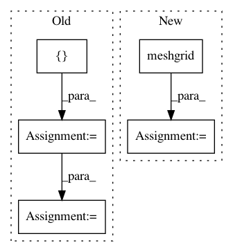

df93c4e61e7ca1db25f1ee346ac0516685498b02,keras_rcnn/backend/tensorflow_backend.py,,shift,#Any#Any#,262
Before Change
shift_r, shift_c = tensorflow.meshgrid(shift_r, shift_c)
shifted_anchors = keras.backend.stack(
(
keras.backend.reshape(shift_r, [-1]),
keras.backend.reshape(shift_c, [-1]),
keras.backend.reshape(shift_r, [-1]),
keras.backend.reshape(shift_c, [-1])
)
)
shifted_anchors = keras.backend.transpose(shifted_anchors)
anchors = keras_rcnn.backend.anchor()
number_of_anchors = keras.backend.shape(anchors)[0]
// number of base points, k = feat_h * feat_w
k = keras.backend.shape(shifted_anchors)[0]
boxes = keras.backend.reshape(anchors, [1, number_of_anchors, 4])
boxes = keras.backend.cast(boxes, keras.backend.floatx())
shifted_anchors = keras.backend.reshape(shifted_anchors, [k, 1, 4])
shifted_anchors = keras.backend.cast(shifted_anchors, keras.backend.floatx())
boxes += shifted_anchors
boxes = keras.backend.reshape(boxes, [k * number_of_anchors, 4])
return boxes
After Change
keras_rcnn.backend.newaxis]
pred_w = keras.backend.exp(dw) * a[:, keras_rcnn.backend.newaxis]
pred_h = keras.backend.exp(dh) * b[:, keras_rcnn.backend.newaxis]
prediction = [
pred_ctr_x - 0.5 * pred_w, pred_ctr_y - 0.5 * pred_h,
pred_ctr_x + 0.5 * pred_w, pred_ctr_y + 0.5 * pred_h
]
In pattern: SUPERPATTERN
Frequency: 3
Non-data size: 5
Instances
Project Name: broadinstitute/keras-rcnn
Commit Name: df93c4e61e7ca1db25f1ee346ac0516685498b02
Time: 2017-08-15
Author: allen.goodman@icloud.com
File Name: keras_rcnn/backend/tensorflow_backend.py
Class Name:
Method Name: shift
Project Name: dask/dask-image
Commit Name: aab843410171a11dfd721b1d9cc980bee4420427
Time: 2018-09-02
Author: jakirkham@gmail.com
File Name: dask_image/ndfourier/_utils.py
Class Name:
Method Name: _get_freq_grid
Project Name: scikit-image/scikit-image
Commit Name: 96e5c12dc5a3a082cbd52fb8164da31318e0201e
Time: 2017-11-14
Author: pradyumnanpk@gmail.com
File Name: skimage/feature/_hog.py
Class Name:
Method Name: hog